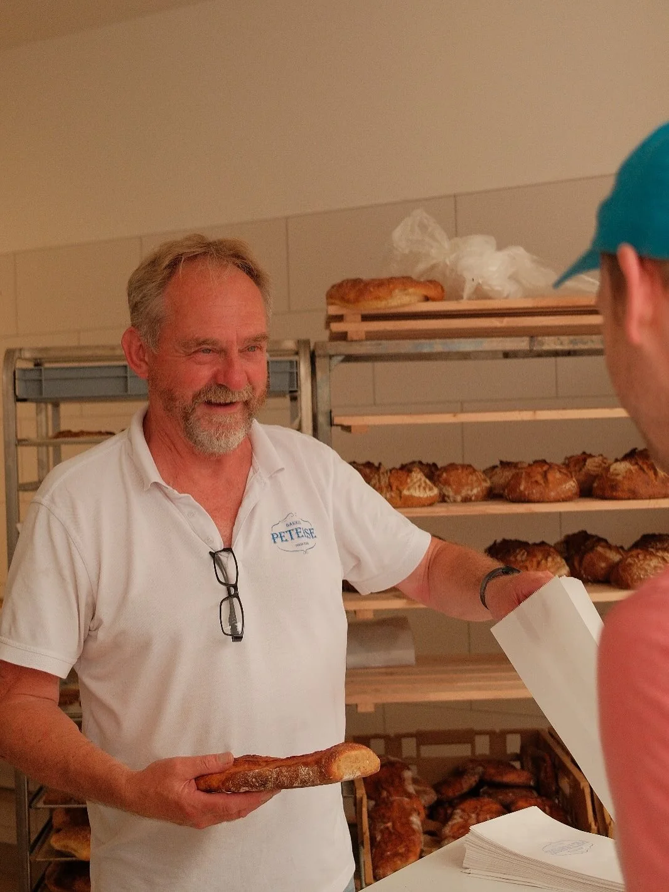

— 01
Onze specialiteit
Desembroden
Eén à twee dagen rust voordat het deeg de oven in mag. Geen gist, alleen wilde fermentatie en lokaal meel. Het resultaat: een krokante korst, een open kruim met karakter, en die onmiskenbare zurige toets die desembrood zo herkenbaar maakt.
Met dit type brood werd Daan in 2023 uitgeroepen tot Nederlands Kampioen Desembrood. We bakken het wekelijks in verschillende varianten — wit-spelt, volkoren, rogge, en seizoensgerelateerde experimenten.